как дима девинн не оплачивал мою работу два с половиной года
история о несуществующей профессиональной этике
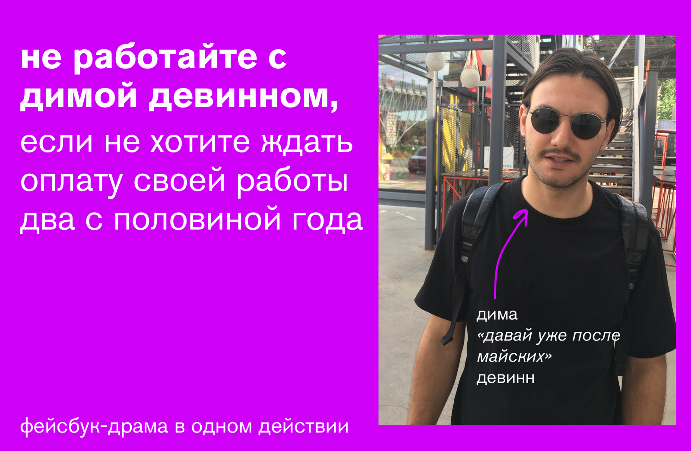
привет! я хотел бы предупредить всех в индустрии: оказывается, Дима Девинн, которого многие из вас знают — либо крайне непорядочный человек, либо не умеет вести дела и бизнес, либо и то и другое
TLDR:
в июне 2019-го я консультировал диму девинна по сценарию и веб-нарративу для его нового стартапа
дима не оплатил счёт в срок, не оплатил через месяц, не оплатил через два месяца, не оплатил через два года
под сильным давлением с моей стороны, и после моего отказа от очередного переноса срока выплаты, дима наконец расплатился со мной — 24-го января 2022-го года
(если лень считать, весь процесс занял всего лишь два с половиной года, big deal)
смотрите, как это было
обращайте внимание на даты
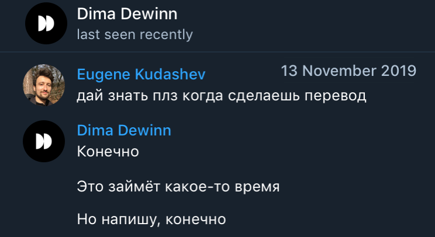
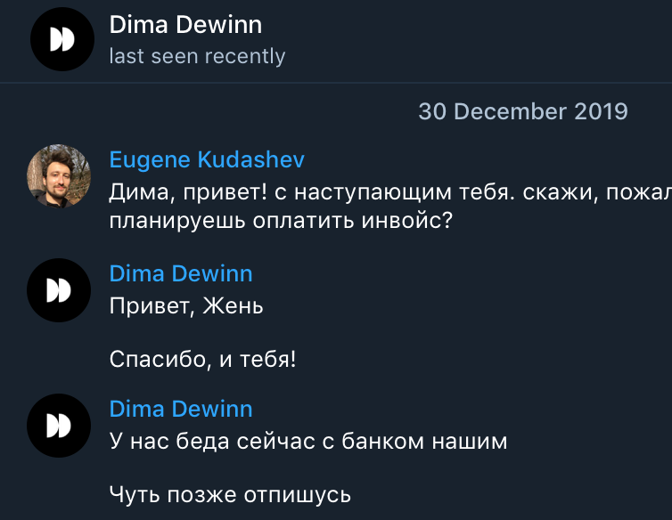
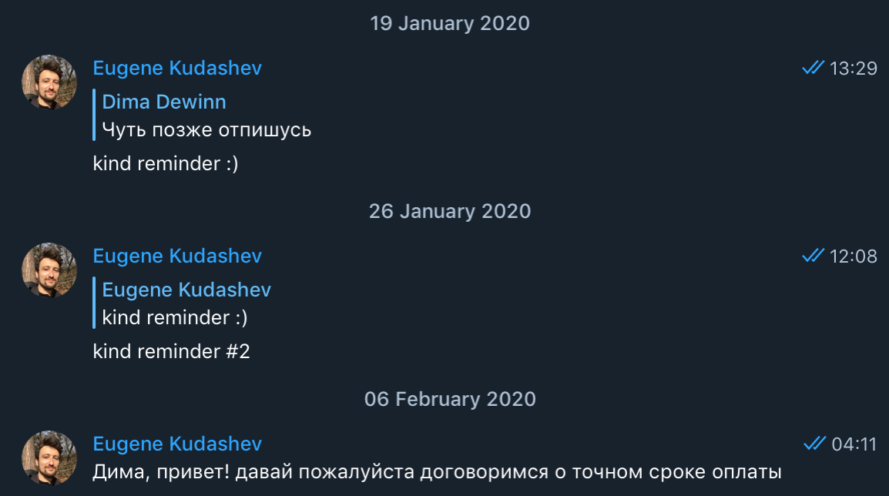
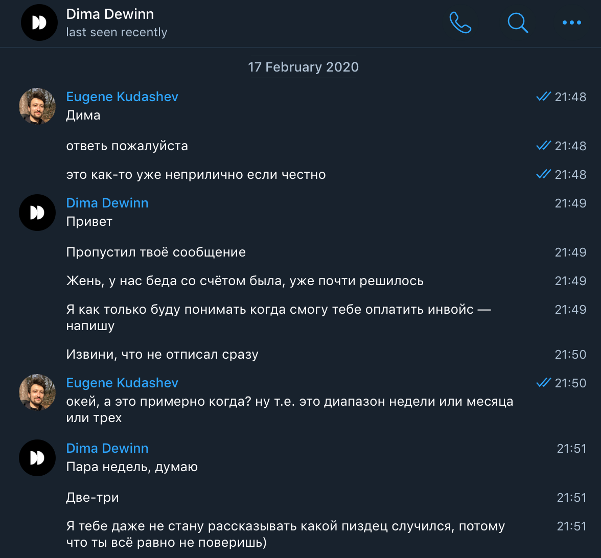

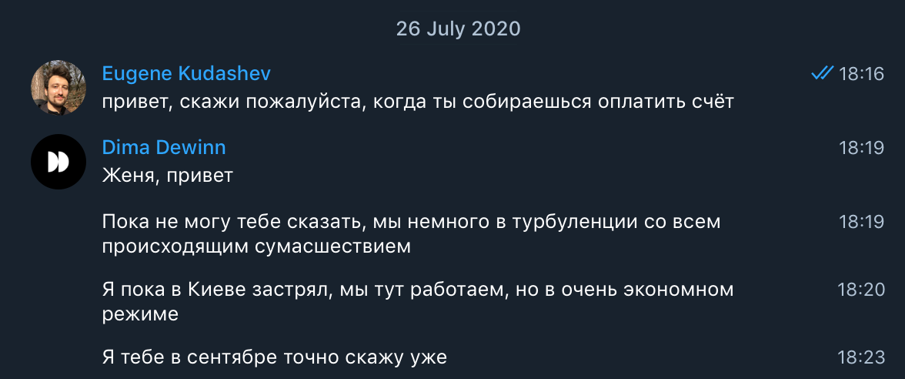
один год и два месяца спустя:
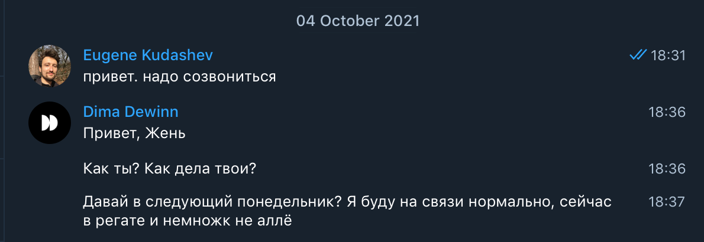
сделаем паузу. к этому моменту со дня завершения работы прошло больше двух лет
что тут видно:
всё это время дима ни разу не вышел на связь сам
я регулярно напоминал ему про долг, и получал в ответ либо молчание, либо обещания про вернуться на связь позже, либо красочные яркие истории о причинах, которые не дают возможность заплатить мне в срок (жаль)
это был шот, а теперь — чейсер: сумма долга — СЕМЬСОТ ДОЛЛАРОВ
(вспоминаю с нежностью те времена, когда я соглашался о чём-то начинать разговор с таким гонораром, спасибо терапии за то, что научила ценить себя)
это был чейсер, а теперь чейсер номер два
4 месяца назад я в очередной раз напомнил диме про долг
мы созвонились, и он предложил, вау, я честно не могу поверить что я это пишу на самом деле — знаете что!
он предложил мне УМЕНЬШИТЬ СУММУ ДОЛГА, потому что СЕЙЧАС ВСЕ СИЛЫ БРОШЕНЫ НА КИКСТАРТЕР, И СЕМЬСОТ ДОЛЛАРОВ НУ НИКАК НЕЛЬЗЯ НАЙТИ
честно говоря, это очень смешно, потому что дима, знакомясь с тобой, вдохновленно делится своим грандиозным планом, рассказывает про vision и амбиции, пишет помпезный манифест о компании будущего, активно занимается неймдроппингом, перечисляя видные компании и людей, с которыми он общается, и которые крайне заинтересованы в его проекте в качестве клиентов/коллабораторов, едет в SV за семизначной суммой инвестиций — И ДВА С ПОЛОВИНОЙ ГОДА НЕ МОЖЕТ ЗАПЛАТИТЬ МНЕ СЕМЬСОТ ДОЛЛАРОВ, лол
получить оплату было непросто
когда я отказался уменьшить сумму долга, дима попросил разбить её на две части
заплатил $400 сразу на звонке
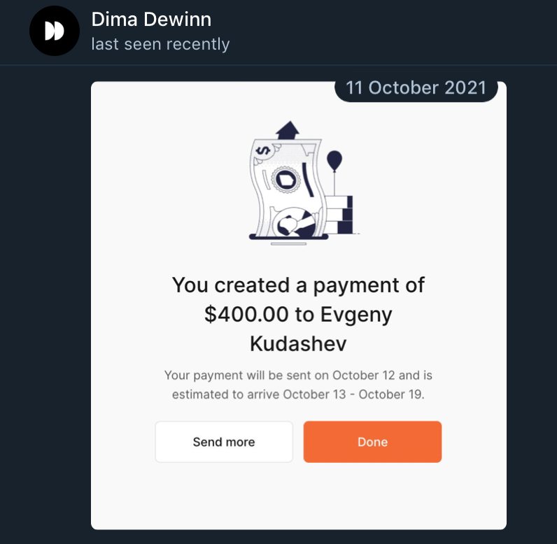
и пообещал заплатить остальные $300 до конца года
ну, думаю, уже ни для кого не сюрприз, что...
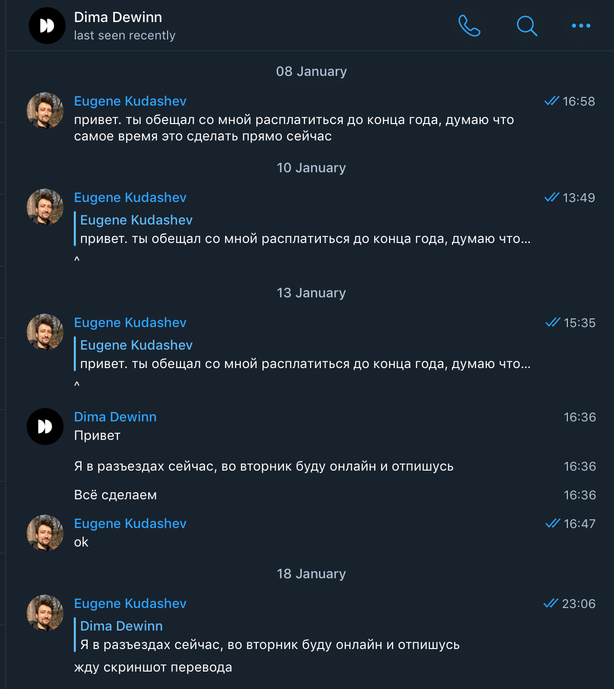
НО РЕБЯТА, ВЫ НЕ ПОВЕРИТЕ!!!
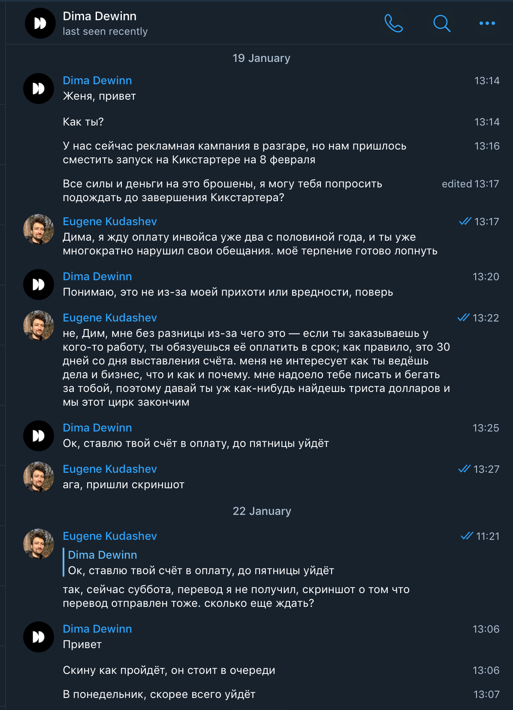
я честно не могу до сих пор поверить своим глазам — что человек, который играет в фаундера и стартап и так далее, оказывается вообще абсолютно беспомощным и жалким НАСТОЛЬКО
и только максимально жёсткая холодная риторика заставляет его всё-таки выполнить свои базовые обязательства
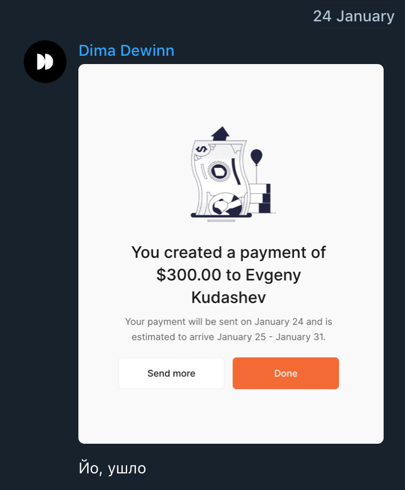
ура! наконец-то я могу забыть об этой истории
но нет
через несколько дней приходят деньги
и тут меня тоже ждал сюрприз
извините но это пиздец!
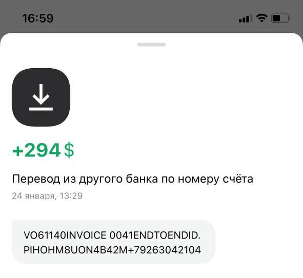
294 доллара, а не 300 — комиссию он записал на мой счёт (буквально)
ДИМА, ГДЕ МОИ ШЕСТЬ БАКСОВ???
умереть как смешно, конечно, ну да ладно
надеюсь, на кикстартере соберёшь!
в сухом остатке:
поведение димы нарушает абсолютно все профессиональные и этические нормы того, как устроена работа у взрослых людей
если ты заказываешь у кого-то работу, ты обязуешься оплатить её в срок — в 30 дней со дня выставления счёта
если ты не можешь оплатить вовремя, ты должен написать заранее, объяснить о причинах, предупредить, предложить компромисс
если ты переносишь срок оплаты десять раз, не выходишь на связь сам, и заставляешь бегать за тобой с вопросом «когда» на протяжении двух с половиной лет, ты проявляешь огромное неуважение к своим коллабораторам
и плевать на деньги — это 700 долларов, лол — это ужасно неприятно исключительно на человеческом уровне: ощущение злости и бессилия, обида на себя за собственную глупость, что не взял предоплату, что не заключил контракт, что поверил и доверился — и, конечно, злость на ощущение безнаказанности и отсутствие какого-либо чувства вины со стороны димы
в общем 0/10, do not recommend
вывод — думайте дважды перед тем как начинать работу без предоплаты и контракта, потому что «ну он же всех знает, его же все знают, у нас сто общих друзей на фейсбуке, переживать не за что»
теперь несколько очень важных нюансов:
я прекрасно знаю, что я далеко не единственный человек, которому дима уже давно должен денег
(дима имел неосторожность обронить фразу «я добавляю тебя в нашу табличку "долги"», да и люди говорят)
я прекрасно понимаю, что дима производит впечатление человека, который знает всех (в москве, в киеве, на яхте безоса), и имеет какие-то серьёзные связи и влияние (спойлер: нет), и эти люди боятся говорить об этих долгах публично, чтобы не испортить никаких отношений
а другие люди, которым дима не платит/не платил годами, предпочитают отмахнуться, забыть и забить, потому что так проще и комфортнее, чем ввязываться в конфликт, и биться за своё
я предполагаю, что за счёт искусственно созданного образа важной публичной персоны, успешного фаундера, и общей доверчивости всех вокруг дима (как и любой другой мошенник) позволяет себе годами обманывать людей — нанимать их на работу, за которую не может заплатить, и годами прикрываться нелепыми отмазками, продолжая делать то же самое — и платить только в ситуации критического обострения конфликта, чтобы избежать последствий
дима почему-то уверен, что он может делать всё, что хочет, и ему за это ничего не будет. что ж, сюрприз: это не так!
диме не повезло, потому что мне вот совершенно не страшно и не лень написать факты как есть. я хочу показать ему и всем на рынке, что эта мнимая безнаказанность — мнимая, и институт репутации существует, и профессионалам крайне важно, с кем работать, а от кого держаться подальше
больше всего мне хочется уберечь всех ребят и ребятесс, которые с ним незнакомы, и которых он будет очаровывать, булшитить (это кажется единственный его навык, потому что, согласно комментариям его бывших коллег, работать он на самом деле не умеет), обещать долю в компании, вот только поконсультируй сейчас бесплатно
(всё вышеописанное выше — это мой личный опыт
поддавшись диминому обаянию и поверив его обещаниям, я на протяжении нескольких месяцев бесплатно консультировал его по коммуникационной стратегии, по бренд-стратегии, помогал ему оформлять презентации и вычитывал письма инвесторам, обсуждал вместе с ним его стартап и делился идеями, как что можно сделать — искренне веря в то, что чувак это ценит, и что сейчас будут деньги и будем фигачить)
сейчас конечно стыдно за свою наивность и глупость, но тогда я был в супер уязвимом состоянии и в одиночестве, так что получать одобрение и внимание было приятно — это-то и подвело мою ясность мысли и рациональную оценку происходящего, никогда больше
не хочется, чтобы люди потратили свое время на работу, за которую они рискуют не получить денег, и, что хуже, на работу, которую их заказчик не ценит, как и их самих — эмоциональный дискомфорт от пренебрежения, честно говоря, куда неприятнее неоплаченного долга
дима, ты думаешь, что так можно — смотри, вот наглядное подтверждение, что так нельзя; у действий есть последствия, удачи тебе с ними разобраться
карьеры успешных мошенников держатся на коллективном равнодушии и молчании достаточно большого количества людей. а мне вот молчать об этом не хочется — со злом надо бороться, а не притворяться, что его не замечаешь
друзья, спасибо что прочитали
пожалуйста, поделитесь этой историей со знакомыми — хотя бы в личке, а лучше публично
давайте собирать все остальные такие истории здесь, чтобы масштаб проблемы быстро выплыл наружу
все, кому дима должен: вы не одни, не бойтесь, выходите в паблик
правда на вашей стороне, а вместе с ней и невероятная, мощная сила
вы все супер! как утешение — дима выбирает в качестве мишеней только исключительно талантливых, порядочных, и классных людей — поскольку самому ему никогда таким не стать
на этом всё! пока